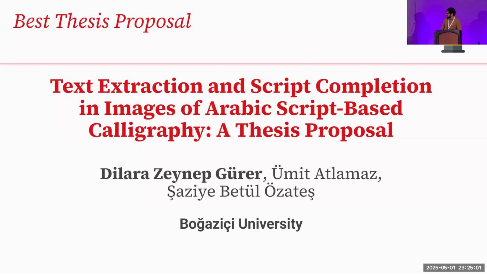

RESEARCH NEWS
See the latest research news from our Institute
RESEARCH NEWS: DSAI PhD Students' Research Accepted for Presentation at ICML 2025

The recent study titled “GazaVHR: AI-Driven Legally Grounded Conflict Harm Documentation”, co-authored by DSAI PhD students Nesibe Şebnem Paluluoğlu and Dilara Zeynep Gürer, together with our assistant professors Muhammed Furkan Akıncı and Mustafa Taha Koçyiğit, has been accepted for poster presentation at the 4th Muslims in ML (MusIML) Workshop, co-located with ICML 2025. The paper introduces GazaVHR, a novel AI-assisted dataset developed for the structured documentation of potential human rights violations in the Gaza conflict using advanced vision-language models. The dataset pipeline begins with over 170,000 images sourced from conflict-related tweets, applies consecutive filtering and semantic clustering techniques, and aligns the output with a legally grounded reference dataset based on the Rome Statute. The final output—4,603 likely high-confidence images—demonstrates the potential of AI in scalable and systematic humanitarian documentation. We gratefully acknowledge Adba Analytics for granting us access to the Twitter data that made this project possible.
(July 23, 2025)
RESEARCH NEWS: DSAI Student Wins First Place at 2025 SMM4H-HeaRD Shared Task on Health Data and Social Media Mining

DSAI MSc student Ece Elif Adak achieved first place in the 3rd shared task of the 2025 Social Media Mining for Health Workshop (#SMM4H), surpassing the previous state-of-the-art performance. Her system earned the highest score in the task, which focused on automatically identifying English-language tweets reporting a family member with dementia. The 2025 Social Media Mining for Health Workshop was held in conjunction with the International AAAI Conference on Web and Social Media (ICWSM) in Copenhagen, Denmark, from June 23 to 26. SMM4H is an interdisciplinary workshop that brings together researchers working at the intersection of natural language processing, machine learning, and health informatics to analyze health-related content from social media and other web-based platforms. We warmly congratulate Elif on this outstanding achievement. The system description paper can be found in this link.
(June 30, 2025)
RESEARCH NEWS: New Paper by DSAI PhD Student: Strategic Implementation of Super-Agents for Military Simulation Adaptability

We're thrilled to share that our second-year PhD student, Emre Fişne, has co-authored an exciting new paper titled "Strategic Implementation of Super-Agents in Heterogeneous Multi-Agent Training for Advanced Military Simulation Adaptability". See the paper from the link. This research explores innovative approaches to enhancing adaptability in military simulations through the strategic deployment of advanced super-agents. The findings promise significant contributions to the fields of artificial intelligence and multi-agent systems. Congratulations to Emre Fişne and the entire team at Boğaziçi University and HAVELSAN for this research! Oktay Altun, Tolga Erol, Hüseyin Furkan Ceran, Korkut Kutay Metin.
( May 28, 2025)
RESEARCH NEWS: DSAI Student won Best Thesis Award at NAACL Student Research Workshop (NAACL - SRW) 2025
DSAI PhD student Dilara Zeynep Gürer's thesis proposal paper, titled "Text Extraction and Script Completion in Images of Arabic Script-Based Calligraphy: A Thesis Proposal," has been selected as the Best Thesis Proposal at the Student Research Workshop (SRW) of the NAACL 2025 Conference. The NAACL 2025 Student Research Workshop was held in conjunction with the main conference in Albuquerque, New Mexico, from April 30 to May 1. The SRW provides student researchers in Computational Linguistics and NLP with the opportunity to present their work and receive constructive feedback and mentorship from experienced members of the ACL community. Dilara Zeynep Gürer’s submission was recognized as the best thesis proposal. We warmly congratulate Dilara on this outstanding achievement. All materials related to the paper — including the presentation slides, a video recording of the talk, and the conference poster — can be found on this website.
( May 28, 2025)